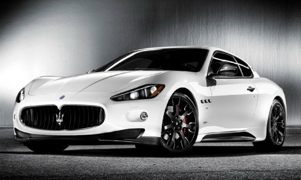

Background:
I decided a second car was needed in August 2021 and after a lot of
research, it was clear a Maserati Granturismo 4.7 MC Shift would be
perfect.
Looks are subjective, but I have always liked the GranTurismo more than any
Ferrari, Porsche or German model.
The combination of Ferrari V8 engine, a "mechanical" single clutch robotised manual gearbox (same as Ferrari 599GTB), great looks and 4 practical seats and boot space means it really is an all round car which can actually be used. These days it is not the fastest, lightest or most technologically advanced car, but it looks amazing and has way more power than can be safely (or legally) be used on UK roads.
Having a young family and a desire to play golf, I also needed a practical car which could fit passengers and golf clubs (plus a trolley!), this therefore ruled out any 2 seater and almost all impractical 2+2 cars (Ferrari California).
The SportsMaserati brainwash...
I have always liked dark colour cars, but after literally spending hours of browsing SportsMaserati and subconciously seeing the logo, it seems my brain was re-wired to want a white car with the exterior carbon pack.

The contrasting front splitter, wing mirrors, side skirts and spoiler give the car a much more sporty presence which matches the V8 sound and MC Shift gearbox.
I kept searching AutoTrader and enquiring with dealers, but my
paitience was wearing thin...
The AutoTrader advert
The car was listed just as I was about to go on a 2 week holiday, so I sent an email with some questions and was pleasently surprised with the quick response received from the dealer.
Some highlights of the car were:
- MC Shift gearbox - Which apart from the obvious shift time benefit, it helps the handling of the car by shifting the weight distribution back to be F47% R53%. The MC Shift was also produced with a sportier exhaust system compared to the auto, which means it sounds even better.
- 2012 manufactured year, so a late run of the model and only 26,000 which is low for 9 years old. I am not too worried about milage, but of course there is a link between parts failing and milage.
- Skyhook suspension, plus front and rear parking sensors - Skyhook and front sensors were factory options.
- Exterior and interior carbon pack - this gives a much sportier look and feel to the car
- Leather and alcantara interior - this was considered a "sports" option from the factory. Personally I like the split look, espectially on the pre-facelift cars.
- The car also had a good service history and I could not find anything online to cause concern.
- Photos from under the car looked good, no obvious signs of corrosion, but still needed a PPI to be carried out.
Some pre-sale pictures:


The Pre-Purchase Inspection
Even though everything seemed to be in order, I decided to go ahead with a Pre-Purchase Inspection and used Dale at PrestigeAutoWorks.